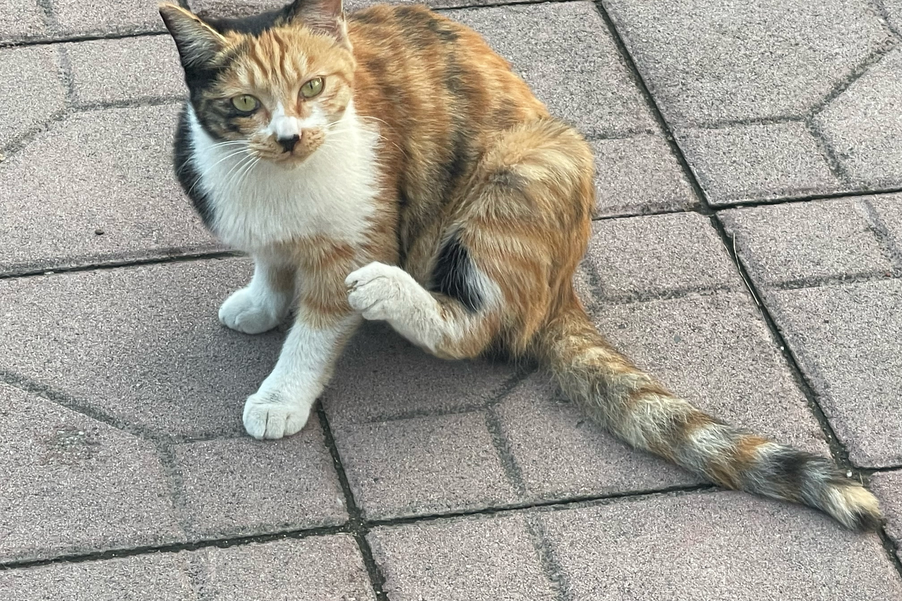
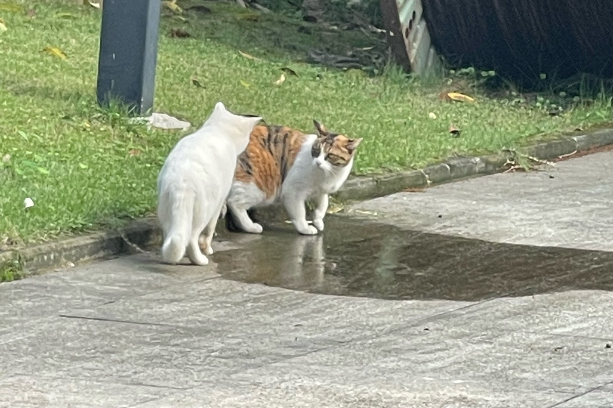
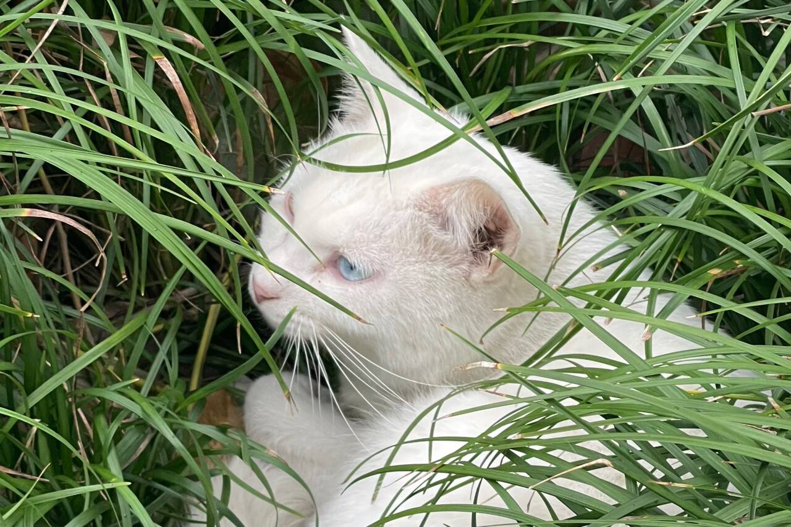
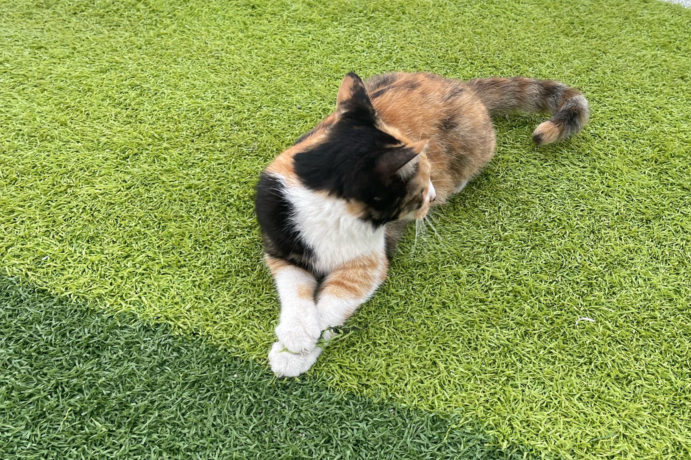

猫染's BLOG
💖 About me
我叫蒋州婷，来自四川成都
- 性格方面，我开朗活泼，待人真诚用心，介于i/e人之间，可灵活切换
- 兴趣爱好方面，听歌唱歌画画都很喜欢 但是是体育苦手一枚！
- 乐于探索和发现，喜欢尝试不同的事情，比如曾做过非常多种类的学生工作，并且对于自己未知的、新的技能与领域抱有求知欲
⭐ 姓名：蒋州婷
⭐ 学号：2024090903030
⭐ 学院：信息与软件工程学院
⭐ 性别：女 ♌
💖 猫片
一些学校里的小猫！





💖 个人兴趣
音乐
听歌 唱歌！都喜欢！
右边这个是草地音乐节表演的视频 ❤
我是粉色衣服，虽然不是很完美啦
画画
看别人画画(bushi)
平时会摸点小鱼
尝试新东西!!!
💖 why
与电脑
初中的时候因为喜欢搞过将近一年的OI，但是后来由于班主任的原因班上所有同学都被强制退出了，太伤心了加上高中学业很忙，后来没有再怎么写代码TT所以约等于零基础，三四年没碰只能从头学起
但是平时很喜欢搞鼓电脑！中学时期基本上周末能拿到电子产品的时间里用计算机的时间>>用手机的时间 从初中开始就关注了一些科技博主和公众号，喜欢搜刮(bushi)很多好用的小工具和插件，也喜欢去了解电脑有关的知识~